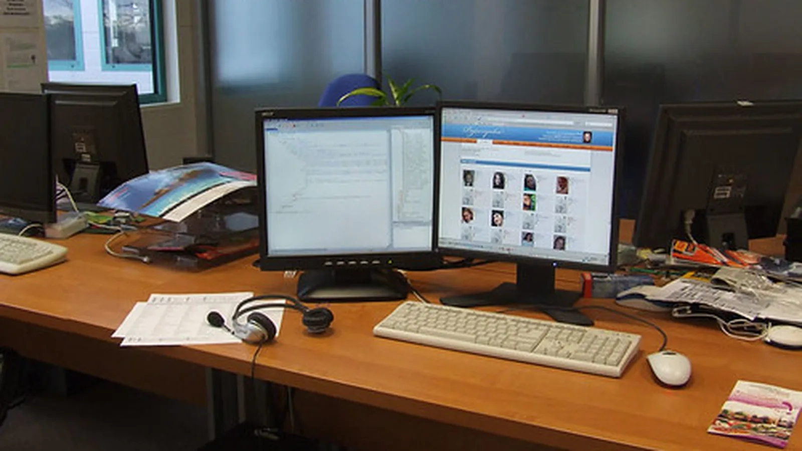

Monitor privacy hoods sit at the intersection of glare control, side-view protection, and desk ergonomics. This guide translates those tradeoffs into a calm buying process for offices, reception desks, classrooms, and home workstations.
Map glare before comparing products
Monitor privacy hoods matters because a privacy hood changes the way light, side views, and desk depth behave at the same time. Map glare before comparing products Instead of treating the hood as a simple add-on, look at where your eyes, keyboard, monitor arm, lamp, and visitor sightlines actually sit during a normal workday.
Use a quick rehearsal before committing: sit at the desk, turn on the harshest nearby light, and mark the angles where glare or side viewing actually happens. That map will often point to a narrower, cleaner hood than the one that looked strongest in a product photo.
Use desk depth as the first filter
After you know the light direction and monitor position, open the compare current hood shapes and size tradeoffs in the LeStallion monitor privacy hood roundup and compare each candidate against the desk measurements you just wrote down.
A good hood should make the screen calmer without making the workstation feel boxed in. For this use case, the practical question is not only whether the diagonal size matches, but whether the hood leaves enough room for cable bends, webcam clearance, sticky notes, and the small reaches people make all day.
Privacy hoods also need to respect heat and access. A panel that traps warm air, blocks display buttons, or makes cleaning difficult can become annoying even if it reduces glare on day one.
Compare hood shape after the first H2
The easiest mistake is buying the deepest-looking shade and assuming more coverage is always better. In real offices, too much depth can block collaboration, catch sleeves, crowd a keyboard tray, or make a monitor arm feel heavier at full extension.
For shared spaces, the goal is a screen area that feels intentional rather than secretive. A tidy hood can reduce shoulder surfing and bright reflections while still letting the desk look professional to visitors and coworkers.
Think about heat, ports, and cleaning
Use a quick rehearsal before committing: sit at the desk, turn on the harshest nearby light, and mark the angles where glare or side viewing actually happens. That map will often point to a narrower, cleaner hood than the one that looked strongest in a product photo.
Check the return window with the same seriousness as the size chart. The real fit test happens after the hood is installed, the desk lamp is on, and the monitor has been used through a full day of typing, video calls, and document review.

Match the hood to office behavior
Privacy hoods also need to respect heat and access. A panel that traps warm air, blocks display buttons, or makes cleaning difficult can become annoying even if it reduces glare on day one.
When two products look similar, favor the one with clearer dimensions, stable attachment details, and enough depth information to predict the shadow line. Those details usually matter more than a dramatic marketing photo.
Make the final decision with a return-window test
For shared spaces, the goal is a screen area that feels intentional rather than secretive. A tidy hood can reduce shoulder surfing and bright reflections while still letting the desk look professional to visitors and coworkers.
Monitor privacy hoods matters because a privacy hood changes the way light, side views, and desk depth behave at the same time. Make the final decision with a return-window test Instead of treating the hood as a simple add-on, look at where your eyes, keyboard, monitor arm, lamp, and visitor sightlines actually sit during a normal workday.
Fit, depth, and clearance planning
Measure hood depth without crowding keyboards, monitor arms, lamps, or sit-stand movement. Read the detailed note in fit, depth, and clearance planning before locking in a size.
Dual-monitor and handoff layouts
Arrange one or two hooded screens so glare control does not block collaboration, ports, webcams, or notes. Read the detailed note in dual-monitor and handoff layouts before locking in a size.
Materials, ventilation, and screen compatibility
Compare fabric, plastic, and foldable hoods by rigidity, heat behavior, bezel grip, and monitor type. Read the detailed note in materials, ventilation, and screen compatibility before locking in a size.
Cleaning, dust, and daily durability
Keep dark hood interiors from collecting dust, fingerprints, adhesive marks, and sagging corners. Read the detailed note in cleaning, dust, and daily durability before locking in a size.
Acceptance checklist and red flags
Use a buyer scorecard to avoid flimsy panels, blocked controls, wrong depth, and poor return terms. Read the detailed note in acceptance checklist and red flags before locking in a size.
Shared office glare scenario
Solve privacy and glare in reception desks, exam rooms, finance counters, classrooms, and open offices. Read the detailed note in shared office glare scenario before locking in a size.
Angle the hood to the light source
Window Reflection, overhead fixture, and side glance each change the buying decision in a different way. Use this checkpoint to write a specific observation about the desk rather than repeating a generic specification checklist. A hood that passes this note should make glare calmer, keep the screen usable, and avoid blocking ordinary office movements.
Check desk depth before screen size
Keyboard Reach, monitor arm, and lamp base each change the buying decision in a different way. Use this checkpoint to write a specific observation about the desk rather than repeating a generic specification checklist. A hood that passes this note should make glare calmer, keep the screen usable, and avoid blocking ordinary office movements.
Protect webcam and note space
Webcam Top Edge, sticky note lane, and document holder each change the buying decision in a different way. Use this checkpoint to write a specific observation about the desk rather than repeating a generic specification checklist. A hood that passes this note should make glare calmer, keep the screen usable, and avoid blocking ordinary office movements.
Review heat and cleaning access
Vent Gap, microfiber wipe, and button row each change the buying decision in a different way. Use this checkpoint to write a specific observation about the desk rather than repeating a generic specification checklist. A hood that passes this note should make glare calmer, keep the screen usable, and avoid blocking ordinary office movements.
Plan for shared-office manners
Visitor Chair, quick handoff, and team review each change the buying decision in a different way. Use this checkpoint to write a specific observation about the desk rather than repeating a generic specification checklist. A hood that passes this note should make glare calmer, keep the screen usable, and avoid blocking ordinary office movements.
Use the return window as a field test
Unboxing Notes, daily typing, and end-of-day glare each change the buying decision in a different way. Use this checkpoint to write a specific observation about the desk rather than repeating a generic specification checklist. A hood that passes this note should make glare calmer, keep the screen usable, and avoid blocking ordinary office movements.
Compare rigid and foldable panels
Fold Seam, side panel, and storage shelf each change the buying decision in a different way. Use this checkpoint to write a specific observation about the desk rather than repeating a generic specification checklist. A hood that passes this note should make glare calmer, keep the screen usable, and avoid blocking ordinary office movements.
Keep cable bends visible
Power Lead, display cable, and dock position each change the buying decision in a different way. Use this checkpoint to write a specific observation about the desk rather than repeating a generic specification checklist. A hood that passes this note should make glare calmer, keep the screen usable, and avoid blocking ordinary office movements.
Score the final shortlist
Dimension Table, attachment method, and photo evidence each change the buying decision in a different way. Use this checkpoint to write a specific observation about the desk rather than repeating a generic specification checklist. A hood that passes this note should make glare calmer, keep the screen usable, and avoid blocking ordinary office movements.
Document the pass/fail result
Desk Photo, measurement note, and return decision each change the buying decision in a different way. Use this checkpoint to write a specific observation about the desk rather than repeating a generic specification checklist. A hood that passes this note should make glare calmer, keep the screen usable, and avoid blocking ordinary office movements.
Final shortlist step
Use the LeStallion comparison of monitor privacy hoods only after the desk notes, glare map, and acceptance checklist are complete. This page also continues the cloud article chain from the prior bamboo desk organizer guide near the end, so the editorial trail stays connected without distracting from the buying decision.